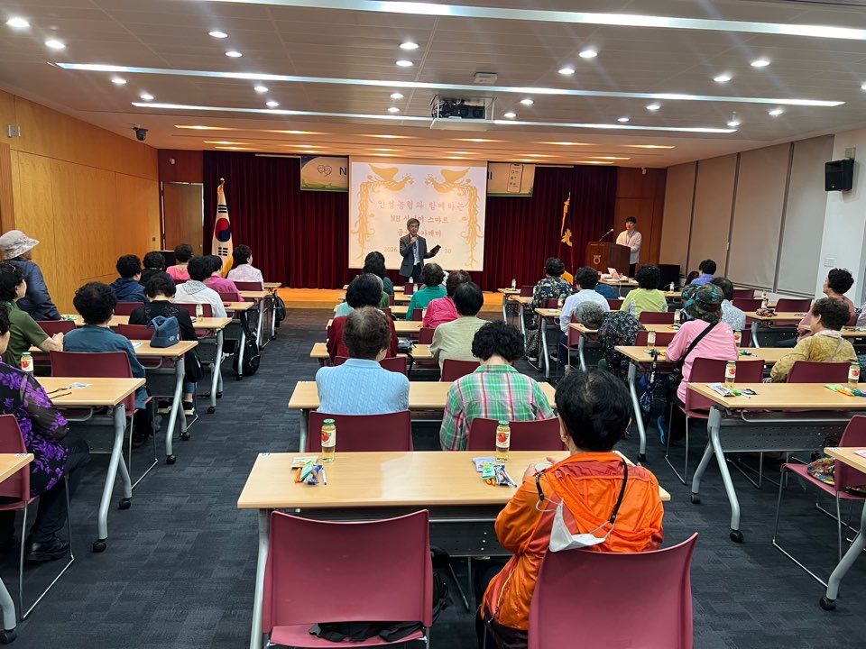
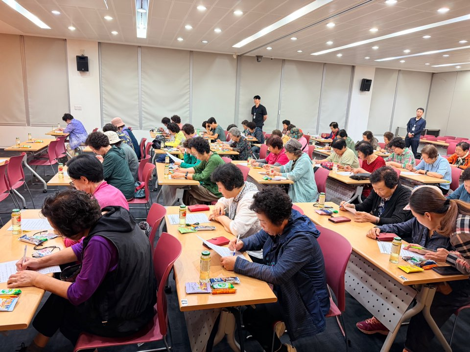
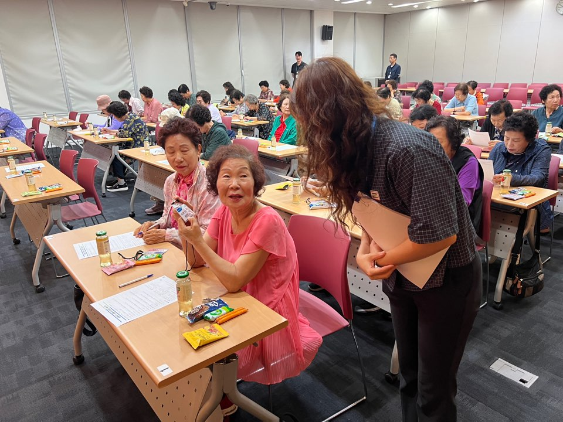
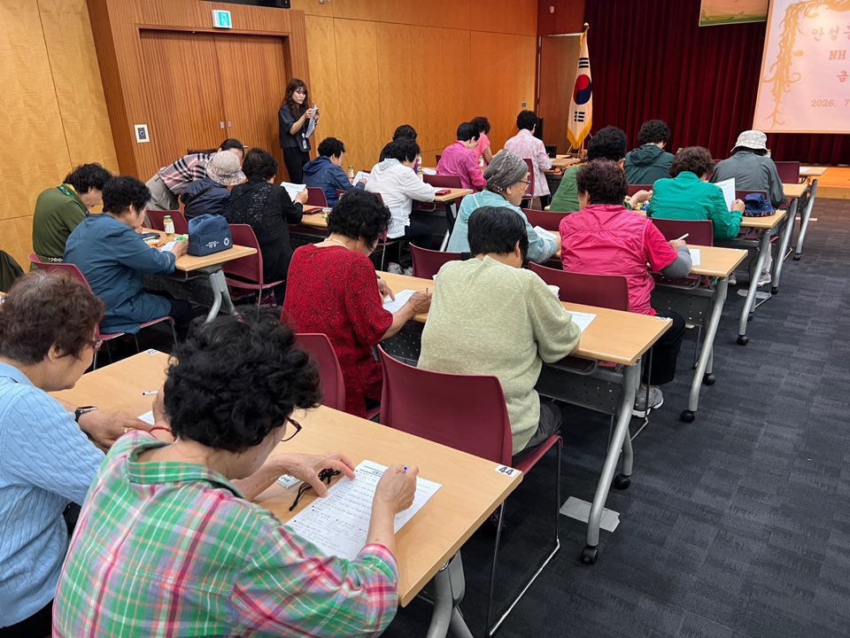
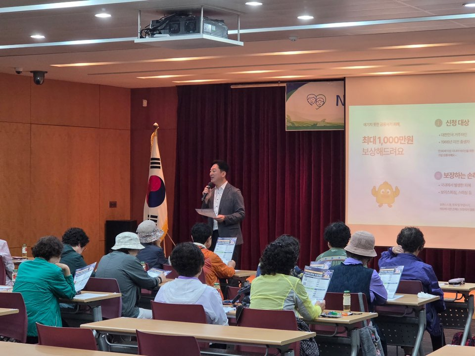
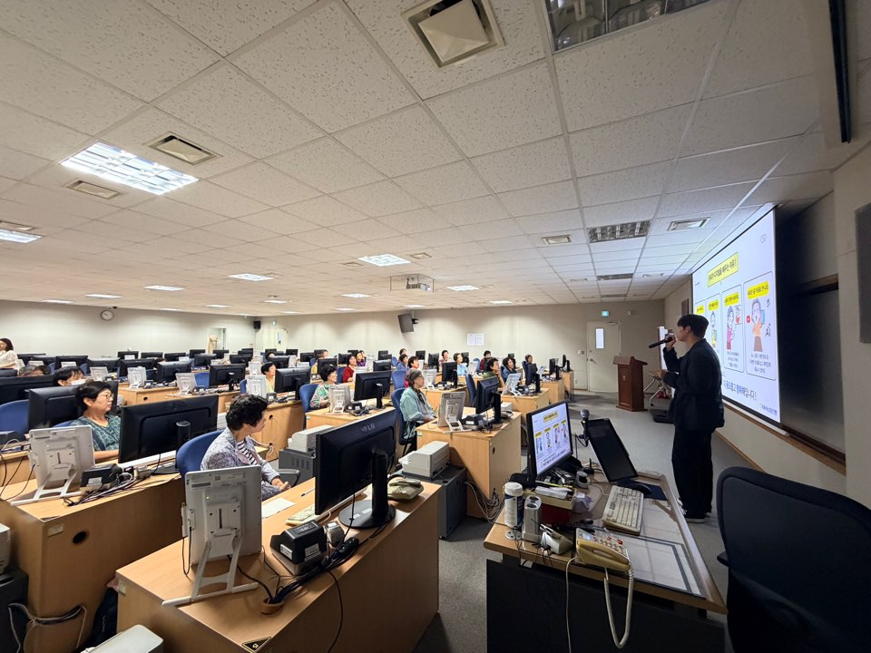
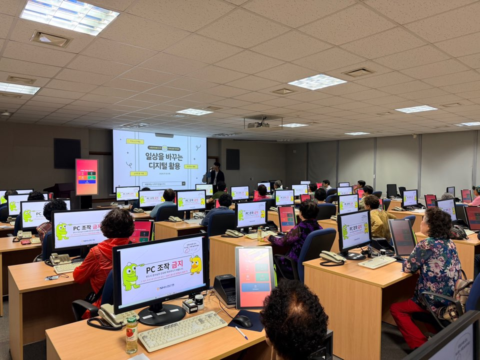
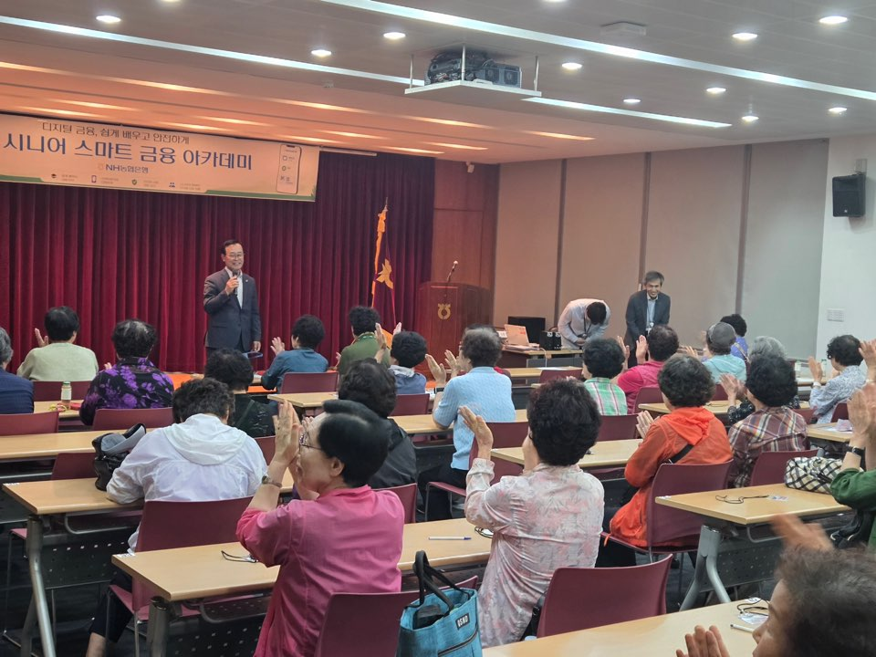
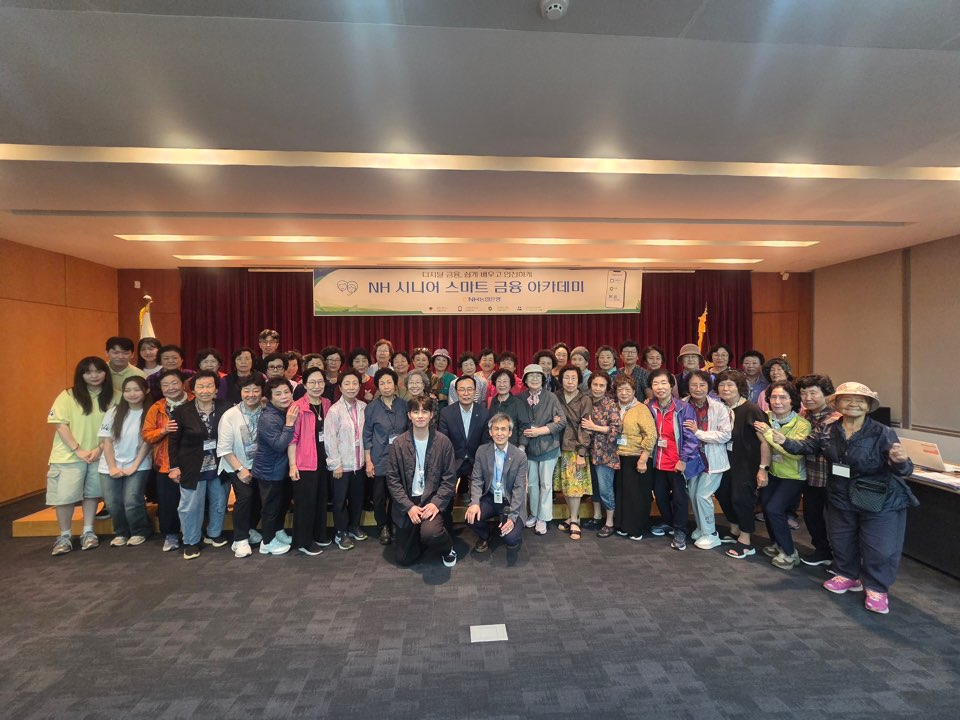
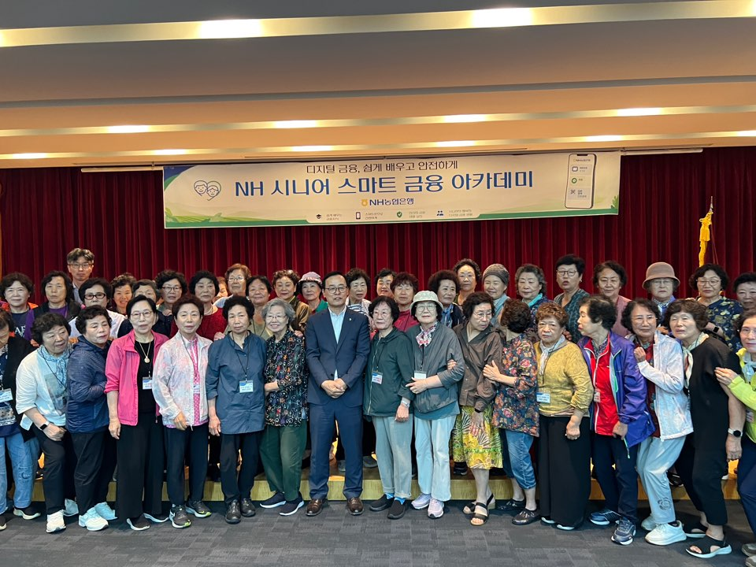

교육 활동 사진
NH 시니어 스마트 금융 아카데미











NH농협은행 테크사업부문에서는 안성지역 조합원 어르신들의 디지털 금융 역량 강화를 위해 「NH시니어 스마트 금융 아카데미 시범교육을 성공적으로 마무리하였습니다.
2026.07.09.(목) 09:30 ~ 13:00
NH농협은행 통합DR센터
안성농협 여성조합원
NH 시니어 스마트 금융 아카데미









NH 시니어 스마트 금융 아카데미 관련 보도자료